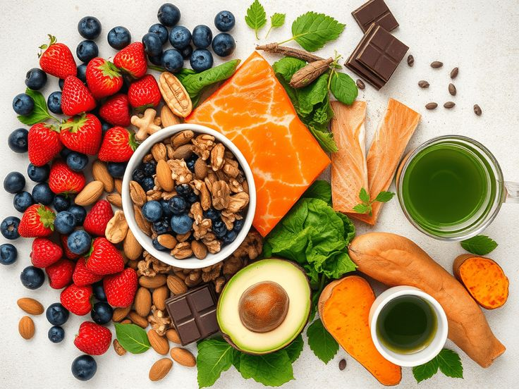

Artikel Pilihan
Nutrisi
5 Superfood yang Wajib Ada di Piringmu Setiap Hari
Tahukah kamu bahwa beberapa makanan biasa ternyata memiliki kandungan nutrisi luar biasa? Temukan superfood terjangkau yang bisa meningkatkan energi dan imunitas tubuhmu.
Baca Artikel →